Adversarial Robustness
When small changes break models
Albert No · Yonsei University
Trustworthy AI · 2026
Contents
A Tiny Nudge
If a model is accurate on test data, can we trust it when someone else chooses the input?
A Tiny Nudge Flips a Confident Answer
Attacker edits pixels slightly · knows the model's gradients · wants any wrong label
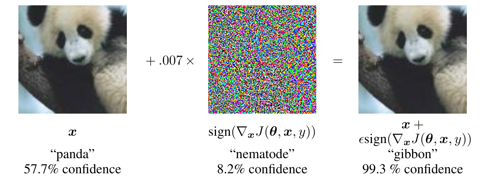
ε = .007: about one 8-bit intensity step, after GoogLeNet's input scaling. The image looks unchanged.
Anatomy of an Adversarial Example
Adversarial example
$x' = x + \delta$: a change $\delta$ too small to alter the true label, chosen so the model's answer changes.
"Small" needs a ruler: we will fix it with a budget ε and a norm.
Not One Unlucky Image
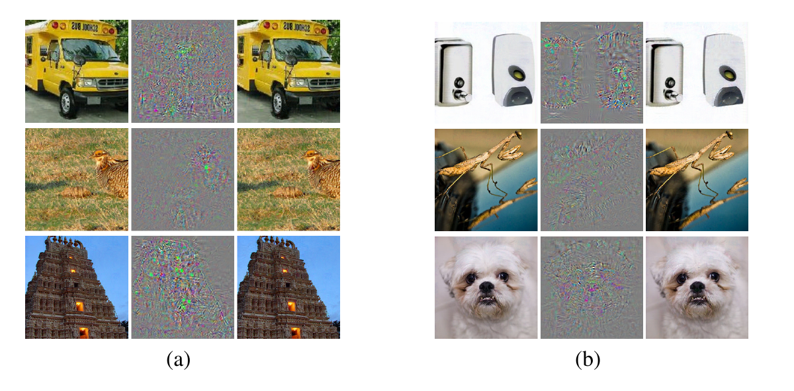
left correctly classified
middle difference, magnified ×10
right every one read as "ostrich"
Authors: examples chosen at random, not hand-picked.
Who Chooses the Input Changes the Question
High accuracy answers the first question, not the second.
Why It Happens, Who Attacks
Two perspectives, then the threat model every claim needs
Inputs Sit Close to the Boundary
Illustrative sketch: real decision boundaries live in very high dimensions.
Perspective 1: Models Are Too Linear
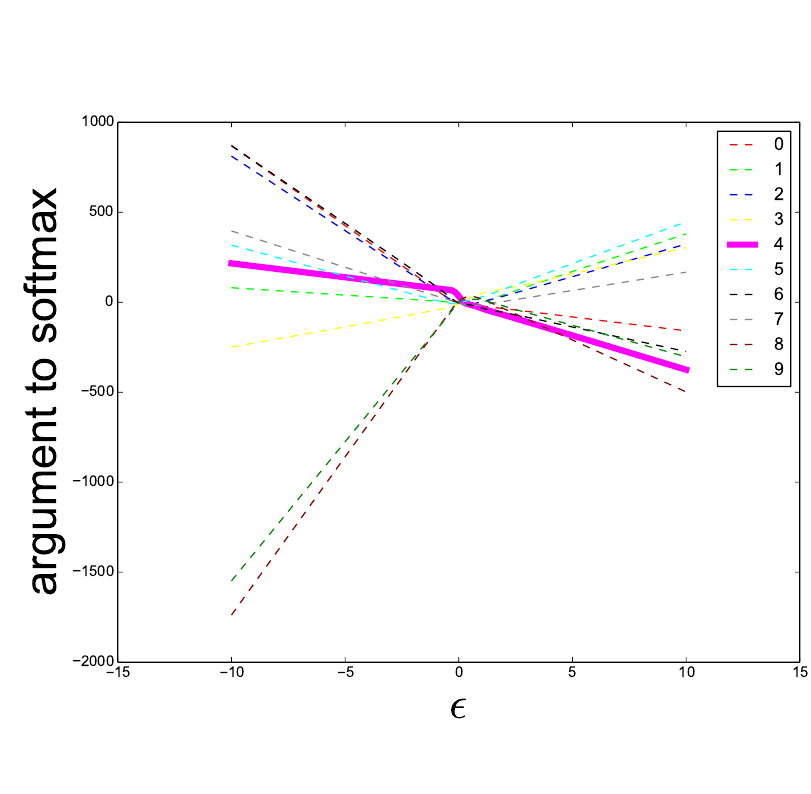
each line one class score (logit)
thick magenta correct class 4
x-axis step size ε along the attack
Scores move in straight lines: small steps add up.
$$w^\top\!\big(\epsilon\,\mathrm{sign}(w)\big)=\epsilon\,\|w\|_1$$
Linear score: grows with the number of pixels.
Perspective 2: Invisible Features Still Predict
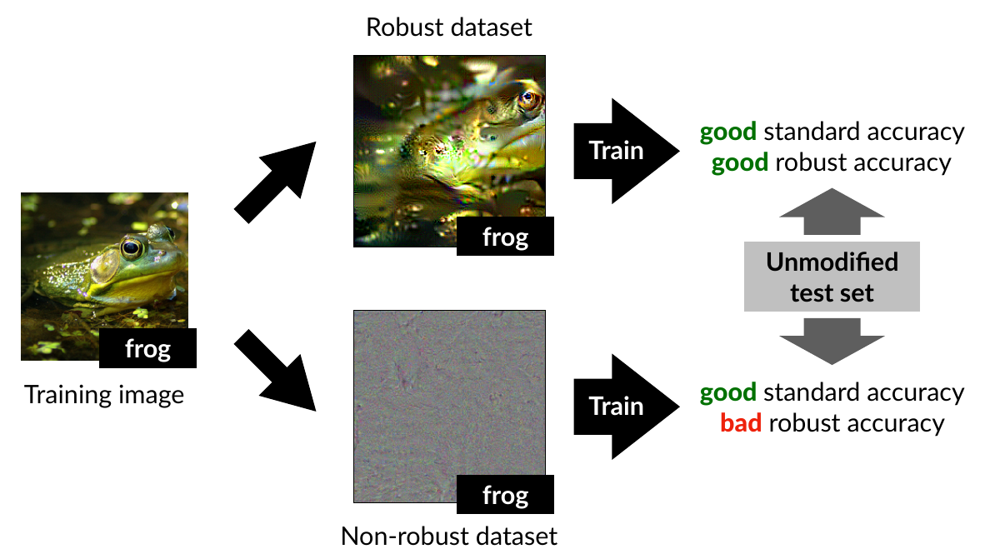
top keep only robust features · bottom keep only non-robust ones: looks like noise, still predicts
"Mislabeled" Adversarial Images Still Teach
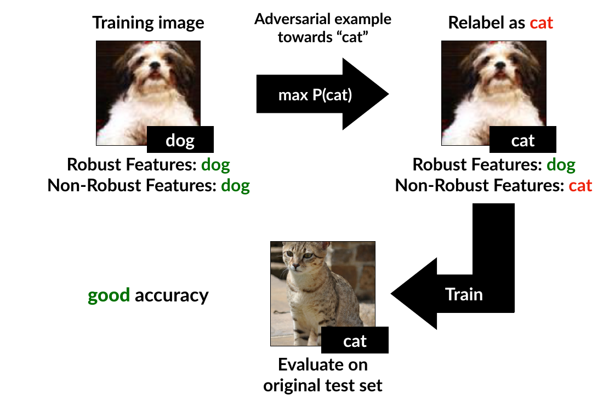
Looks like a dog, labelled cat · trained only on such images · still classifies real cats well
Two Perspectives, Not One Cause
| Too linear | Non-robust features | |
|---|---|---|
| Core idea | Small moves add up | Hidden patterns predict |
| Explains well | Why FGSM works | Why attacks transfer |
| Evidence | Logits vs ε, linear models | Retraining experiments |
Useful lenses with evidence; neither is settled as the single cause.
Every Claim Needs a Threat Model
"Robust" with no threat model is not yet a claim.
The Budget ε Bounds the Change
Allowed changes: a ball of radius ε around $x$.
$$\mathcal{B}_\epsilon(x)=\{\,x+\delta:\ \|\delta\|\le\epsilon\,\}$$
| Common setting | Budget | Meaning |
|---|---|---|
| CIFAR-10, $\ell_\infty$ | 8/255 | each pixel ±3% |
| MNIST, $\ell_\infty$ | 0.3 | each pixel ±30% |
Conventions, not laws: the right ε depends on the application.
$\ell_\infty$ vs $\ell_2$: Two Shapes of "Small"
ℓ2 size = root of summed squared pixel changes · box and ball captions are examples
ℓ2 = 1.0 with pixels in [0, 1] = in 0–255 units: 1 pixel by 255, 10 by 80, 100 by 25, 1000 by 8
What the Attacker Knows
Defenses are judged against the white box: hiding the model is not robustness.
Attacks Transfer Between Models
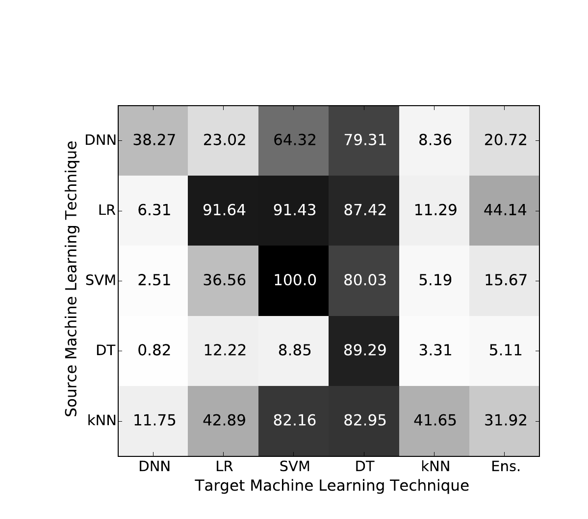
row model the attack was crafted on
column model it was tested on
cell % of examples that fool it
Crafted on logistic regression, 91.43% also fool an SVM.
Transfer Reached Real Services
Attacker sees labels only, 800 queries · wants any wrong digit
2016 services, MNIST digits: transfer is practical. Not evidence about today's APIs.
Any Wrong Label, or a Chosen One
Robust accuracy is usually reported against untargeted attacks.
Finding the Worst Case
An attack is a search; a weak search overstates robustness
An Attack Is a Search Inside the Ball
Find the allowed change that hurts the model most:
$$\max_{\|\delta\|\le\epsilon}\ L\big(f(x+\delta),\,y\big)$$
Training lowers loss by changing weights; attacks raise it by changing the input.
FGSM: One Step Along the Gradient Sign
$$x' = x + \epsilon\cdot\mathrm{sign}\big(\nabla_x L(f(x),y)\big)$$
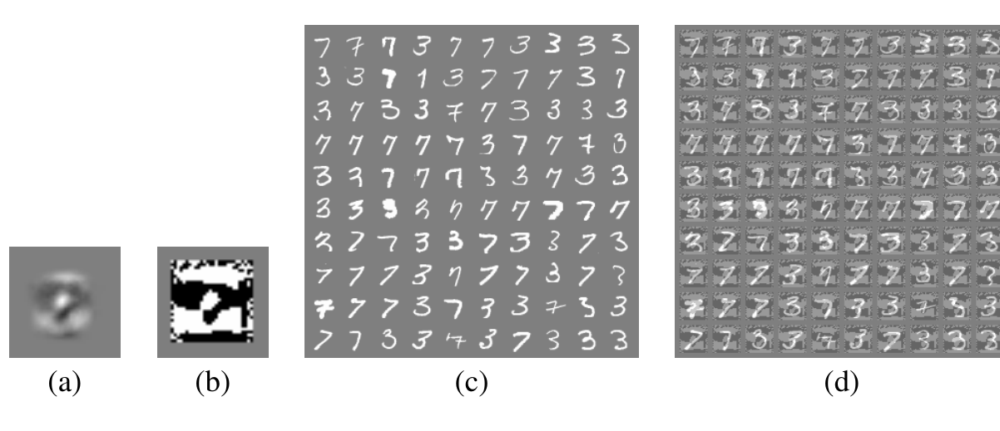
(a) weights · (b) their sign = the attack · (c) clean 3s, 7s · (d) attacked, ε = .25
Logistic regression, MNIST 3 vs 7: error 1.6% → 99%
FGSM by Hand: Only the Sign Matters
| Pixel | $x$ | gradient | sign | $x'$ (ε = 0.1) |
|---|---|---|---|---|
| 1 | 0.20 | +0.70 | + | 0.30 |
| 2 | 0.50 | −0.10 | − | 0.40 |
| 3 | 0.85 | +0.02 | + | 0.95 |
Every pixel moves the full ε, even pixel 3 with a tiny gradient.
Illustrative numbers. Real images: thousands of pixels, all moved at once.
One Step Can Miss the Worst Point
black true loss · red dashed tangent at $x$ (FGSM's linear model) · shaded allowed interval
FGSM jumps to the edge the slope points to; the curved loss peaks inside.
Illustrative 1-D loss, $L(u)=\sin u$.
PGD: Many Small Steps, Then Project
- Start at a random point in the ball
- Step size α along $\mathrm{sign}(\nabla_x L)$
- Project: clip back into the ball and valid pixel range
- Repeat for $K$ steps (PGD-$K$)
- Restart several times; keep the highest-loss point
FGSM is the one-step case: no random start, α = ε, K = 1.
Steps Stay Inside the Ball
Projection keeps every iterate a legal attack under the threat model.
Many Restarts Reach Similar Loss
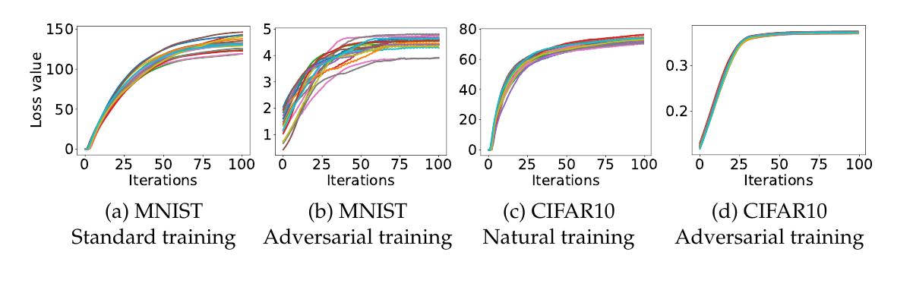
each line one PGD run from a random start, 20 runs, same image
Evidence PGD is a strong first-order attack, not proof no worse point exists.
Weaker Attacks Overstate Robustness
CIFAR-10 · adversarially trained wide ResNet · white box · $\ell_\infty$, ε = 8/255
Same model, stronger search, lower number: report the strongest attack.
Defenses and Honest Evaluation
"The attacks we tried failed" is not "no attack can succeed"
The Defender Needs the Whole Ball
Robust accuracy at ε
Fraction of test inputs where every point in the ball gets the right label.
Attacker needs one bad point; defender must cover them all.
Adversarial Training: Train on the Worst Case
$$\min_\theta\ \mathbb{E}_{(x,y)}\Big[\max_{\|\delta\|\le\epsilon} L\big(f_\theta(x+\delta),y\big)\Big]$$
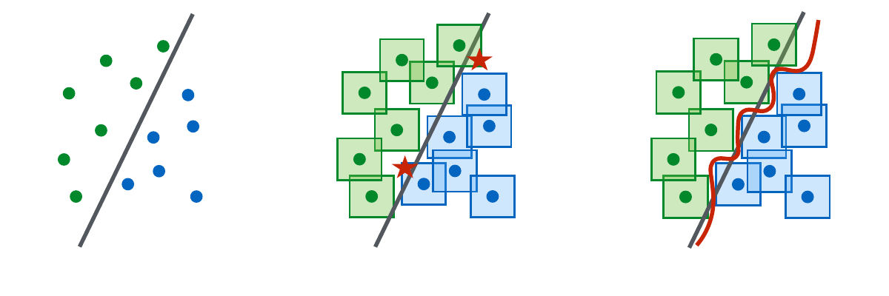
left points separable · middle boxes cross the line (★ = attack) · right a bent boundary clears every box
Robustness Can Cost Clean Accuracy
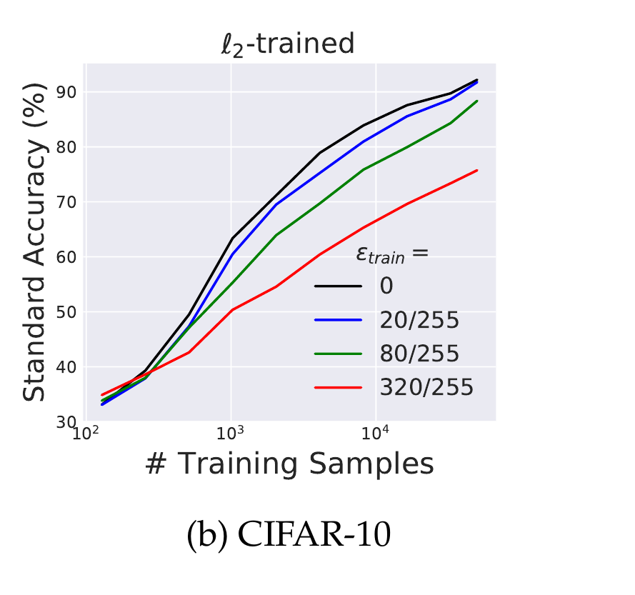
y clean (standard) accuracy
x training-set size (log)
lines training budget ε: black 0 (standard) · blue 20/255 · green 80/255 · red 320/255
With enough data, larger ε sits lower.
Also costs compute: each training step runs an attack first.
Some Defenses Only Break the Attack
Gradients mislead the attacker; adversarial examples still exist.
Seven of Nine Defenses Fell to Adapted Attacks
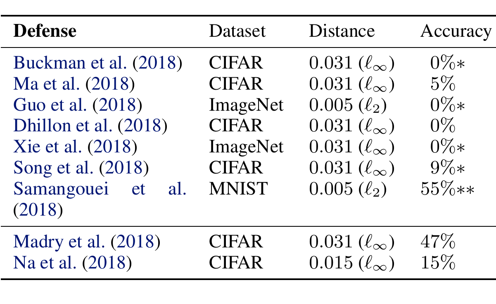
row an ICLR 2018 defense
distance its own threat model
accuracy under the adapted attack
* paper also pairs it with adversarial training; defense alone shown
** partly broken: 0% in principle, imperfections foiled the attack
6 broken fully, 1 partly. Adversarial training held: 47%.
Adaptive Attacks: Attack the Defense You Have
- Read the defense; target its weak part
- Non-differentiable step? Approximate it (BPDA)
- Randomness? Average gradients over draws (EOT)
- Diagnostic: huge ε should drive accuracy near 0%
- Diagnostic: black box beating white box hints at masking
Checks raise red flags; passing them proves nothing.
AutoAttack: A Fixed, Parameter-Free Ensemble
An input counts as robust only if all four fail.
>50 published models: lower than reported in all but one; by >10 points in 13 of 49
RobustBench: A Standardized Benchmark
Protocol
- Fixed dataset and threat model
- AutoAttack on every entry
- Outside adaptive attacks welcome
Entry rules
- Non-zero gradients
- Deterministic forward pass
- No optimization loop inside
Rules exclude defenses AutoAttack can't fairly test; those need custom evaluation.
Scoreboard Snapshot: Robust Models Exist
CIFAR-10 · $\ell_\infty$, ε = 8/255 · untargeted · 99 entries · accessed 10 Oct 2026
| Rank | Model | Clean | AutoAttack | Best known |
|---|---|---|---|---|
| #1 | Bartoldson et al. 2024, WRN-94-16 | 93.68% | 73.71% | 73.71% |
| #2 | MeanSparse 2024 | 93.60% | 75.28% | 73.10% |
| #99 | Standard training, WRN-28-10 | 94.78% | 0.0% | 0.0% |
Ranked by best known. #1: 73.71% accuracy under AutoAttack in this setting.
Clean column compares different models and data, not robust training's cost alone.
A Benchmark Score Is Not a Guarantee
MeanSparse, RobustBench #2 · same CIFAR-10 $\ell_\infty$ 8/255 setting
Every attack-based score is an upper bound; the next attack may lower it.
Robust Under One Ruler, Not Every Ruler
- Training on $\ell_\infty$ gives limited robustness under other norms
- Madry's MNIST model: PGD overestimated its $\ell_2$ robustness
- A gradient-free attack found it more brittle
- Corruptions and new viewpoints: a different question
A score names its threat model. No automatic guarantee outside it.
Empirical vs Certified Robustness
A certificate proves the prediction is stable, not that it is correct.
certified accuracy counts inputs that are both correctly classified and certified
Randomized Smoothing: Vote Under Noise
left input $x$
right one noisy copy, $x+\eta$
$g$ returns the class $f$ picks most often under noise.
$$g(x)=\arg\max_c\ \Pr\big[f(x+\eta)=c\big],\quad \eta\sim\mathcal{N}(0,\sigma^2 I)$$
In practice the vote shares are estimated by sampling; that procedure may abstain
A Clear Vote Survives Any Small Shift
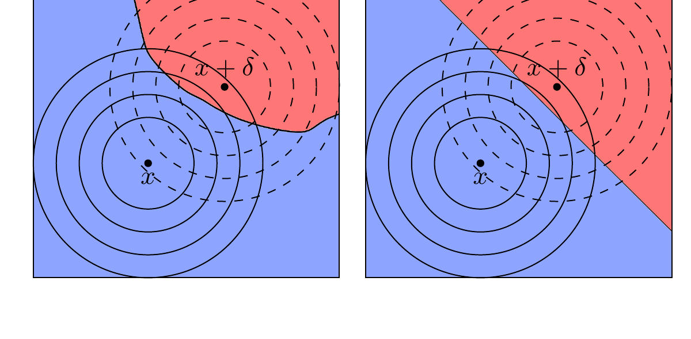
circles noise around $x$, $x+\delta$
right worst-case $f$: a straight cut
At fixed noise level, a larger vote margin gives a larger certified $\ell_2$ radius $R$.
Certifies g, not f · formula for $R$: technical supplement
Sampled: abstains when no class clearly leads · per input, P(invalid certificate) ≤ α
Certificates Are Real, but Modest
ImageNet · ResNet-50 base · $\ell_2$ radius $R$ · 500 test images · α = 0.001
Counts correct and certified, by sampling · 110 s/image on the paper's hardware · this $\ell_2$ region only
Off the Screen, and What to Ask
One physical case, read carefully, then a checklist for any claim
Off the Screen, the Attack Must Survive the Camera
Fix: optimize the average loss over sampled transformations (EOT).
Raises average success over sampled transformations, not success on each one.
Stickers Made a Classifier Read "Speed Limit 45"
Attacker adds stickers · knows LISA-CNN (white box) · wants Stop → Speed Limit 45
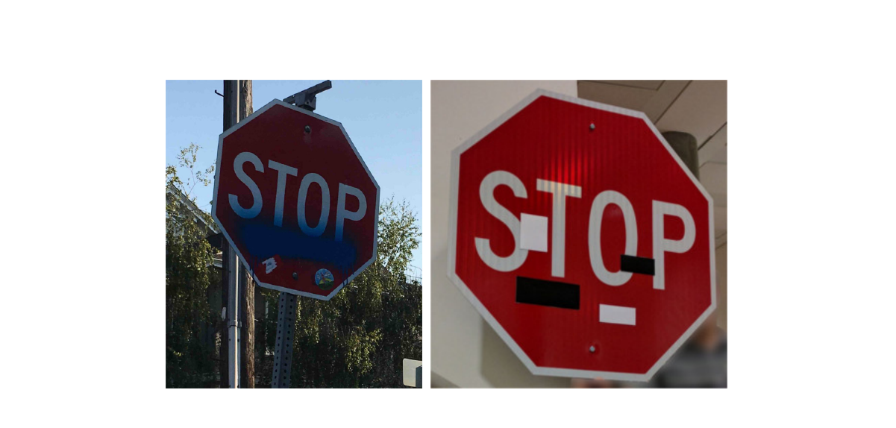
left real graffiti · right attack stickers: 100% targeted in lab, 84.8% of drive-by frames
What the Stop-Sign Result Does Not Show
Shown
- Printed stickers can fool a classifier
- Across tested angles, distances
- On a slow drive-by, straight road
Not shown
- Detectors or full driving systems
- Without hand-controlled cropping
- At speed, any road, any weather
Constrained pseudo-random crops (most of sign visible): 70% targeted. Drive-by: 0–20 mph, ~250 ft.
Attackers Are Not the Only Shift
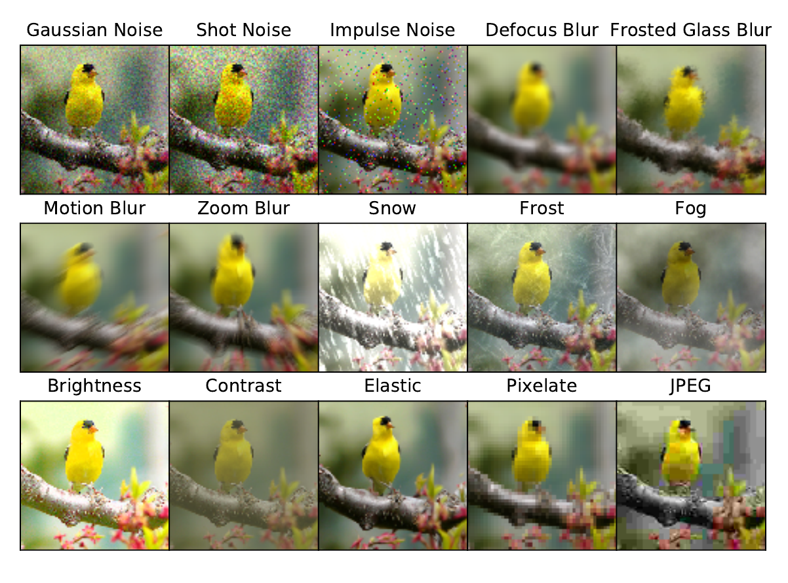
grid 15 corruptions × 5 severities
Noise, blur, weather: no adversary, still frequent.
A separate benchmark, a separate question.
Four Questions for Any Robustness Claim
A claim missing any answer is incomplete, not necessarily wrong.
Applying It: "73.71% Under AutoAttack" on RobustBench
| Question | Answer for the #1 entry |
|---|---|
| What changes? | CIFAR-10 pixels, $\ell_\infty$ ≤ 8/255 |
| Which attacker? | White box, untargeted, AutoAttack |
| Measured how? | Empirical, snapshot 10 Oct 2026 |
| At what cost? | Clean 93.68% (standard WRN: 94.78%, other setup); 300M synthetic images |
No automatic guarantee for $\ell_2$, corruptions, or physical stickers.
Established vs Open
Established
- Tiny changes fool accurate models
- Weak attacks overstate robustness
- Adversarial training helps, partly
- Certificates exist for small $\ell_2$ balls
Open
- One agreed cause
- Robustness across all threat models
- Large certified radii at scale
- Robustness with no accuracy cost
Takeaways
- Accuracy is average case; attackers pick the worst
- A robustness claim needs a threat model
- Report the strongest, adaptive attack
- Benchmarks standardize; they don't guarantee
- Certificates prove small regions, at a cost
Ask: robust to what, against whom, measured how, at what cost?
Robust to what, against whom, measured how, at what cost?